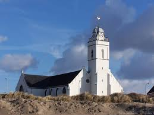
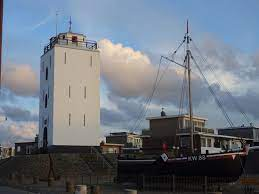

Andreaskerk (oude kerk)
 De Andreaskerk in Katwijk aan Zee, in de Nederlandse provincie Zuid-Holland, staat pal aan de Boulevard. De kerk is vernoemd naar de apostel Andreas, onder meer schutspatroon van de vissers. De kerk is gebouwd omstreeks 1460, toen Katwijk aan Zee een zelfstandige parochie werd.
De kerk werd op 5 april en 24 mei 1571 geplunderd door de watergeuzen. Later, tijdens het Beleg van Leiden, werd het dak en de bovenste deel van de muren van de kerk vernield. Vermoedelijk is tussen 1580 en 1590 het zuidelijke schip herbouwd. De klok dateert uit 1594. In 1709 is de kerk uitgebreid met het noordelijke schip. Toen in 1791 een nieuwe begraafplaats was ingericht ten oosten van het dorp werd men niet meer in de kerk begraven.
De kerk had lange tijd een spitse toren, maar tijdens de storm op 29 november 1836 werd de punt zo beschadigd dat deze moest worden afgebroken. Het jaar daarop kwam er een achtkantige koepel voor in de plaats.
Omdat in 1887 de Nieuwe Kerk aan de Voorstraat was gebouwd werd de Oude Kerk in 1890 voor 6000 gulden verkocht. Tot 1921 heeft het gebouw dienstgedaan als rederijschuur van N.V. Rederij Katwijk, die eigenaar was van een aantal bomschuiten. Het gebouw diende als opslagplaats voor scheepsbenodigdheden en zout. Ook werden er netten gerepareerd door een ploeg boet(st)ers. Dit kwam tot een einde, omdat de (trage) bomschuiten werden vervangen door (snellere) loggers, die niet op het strand konden liggen. In 1921 werd het gebouw voor 45.000 gulden teruggekocht. Op 27 februari 1924 was de verbouwing gereed en werd de kerk opnieuw in gebruik genomen.
Oorspronkelijk (1480 en later) stond de kerk in het centrum, maar doordat de zee met name tijdens de Allerheiligenvloed van 1570 huizen ten westen van de kerk wegspoelde, staat het gebouw nu aan de kust tegen de boulevard aan. Het is daarmee de enige kerk in Nederland die pal aan zee ligt.
De Vuurbaak van Katwijk aan Zee
 De vuurbaak van Katwijk aan Zee, in de Nederlandse provincie Zuid-Holland, wordt ook wel Vierboet genoemd. Het is na de Brandaris het oudste bewaard gebleven vuurtorengebouw van Nederland. De toren heeft een hoogte van 12 meter en staat achter de boulevard bij het Vuurbaakplein, aan de zuidwestkant van het dorp. Tegen kinderen in Katwijk werd niet verteld dat zij door de ooievaar werden gebracht, maar dat zij uit deze Vierboet kwamen. Sinds 1968 is de toren in de zomermaanden geopend voor publiek.
Het verzoek om een vuurbaak te bouwen werd in 1605 ingediend bij stadhouder Prins Maurits en werd hier toestemming voor gegeven. In navolging van Katwijk kreeg elke vissersplaats aan de kust zijn eigen vuurtoren of vuurbaak.
Op het platte dak lag een rooster waarop een houtvuur werd gestookt, later een kolenvuur en halverwege de 19e eeuw werd een olielamp met reflector in een lichthuis geplaatst. Het visserslicht werd alleen ontstoken als er schepen van de eigen vloot waren uitgevaren. Katwijk heeft nooit een vissershaven gehad, hoewel er een waterweg was van de Haarlemmertrekvaart naar zee en deze door Katwijk liep. De bomschuiten lagen echter gewoon op het strand. De Vierboet staat dus niet bij de monding van die waterweg, maar een stuk zuidelijker. Sinds 1912 is de vuurbaak niet meer in werking, omdat er toen geen schepen meer in Katwijk aan land kwamen.
De Vierboet is sinds 1971 een rijksmonument. In 2005 bestond de vuurtoren 400 jaar. Ter gelegenheid hiervan werd de toren met krimpfolie omwikkeld en daarna voorzien van een graffitikunstwerk, dat na de zomer weer werd verwijderd.